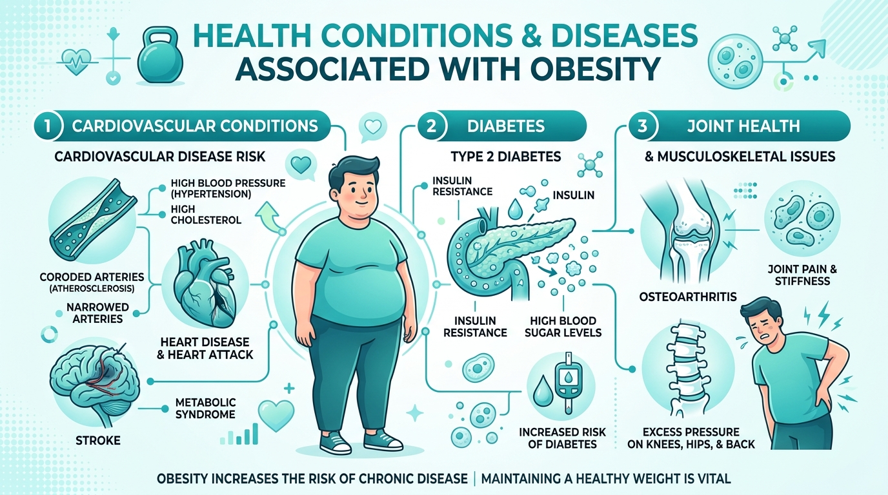

Consequências e Doenças Associadas

A obesidade é um fator de risco primário para o desenvolvimento de diversas doenças crônicas não transmissíveis.
Principais Condições Relacionadas:
- Diabetes Tipo 2: O excesso de gordura aumenta a resistência à insulina (HbA1c elevada).
- Doenças Cardiovasculares: Elevação da pressão arterial e risco de hipertensão e infarto.
- Problemas Articulares (Osteoartrite): A sobrecarga mecânica sobre joelhos e coluna desgasta as articulações.
- Apneia do Sono: Dificuldades respiratórias noturnas causadas pelo acúmulo de gordura na região cervical.
A boa notícia: Pequenas reduções no peso corporal (de 5% a 10%) já trazem riscos elevados benefícios significativos para a saúde e controle destas enfermidades.
* Fonte: Organização Mundial da Saúde (OMS) e Ministério da Saúde.